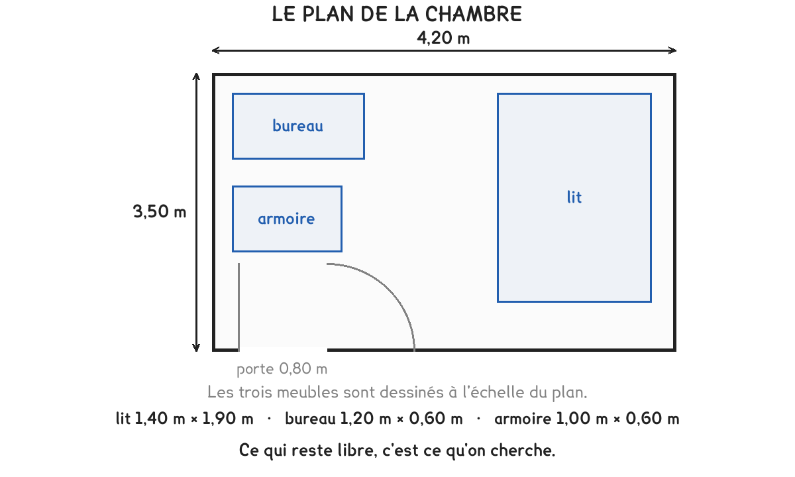

8
CAP Électricien · 1re année
Est-ce queça rentre ?
Le périmètre fait le tour, l'aire couvre le sol. L'unité de la réponse dit lequel des deux on a calculé.
3 exercices · 11 items d'entraînement · 1 figure
Savoirs travaillés
GE GéométrieCN Calculs numériques
La chambre

Le plan coté de la chambre, meubles compris.
La chambre mesure 4,20 m sur 3,50 m.
Deux calculs, deux unités. Le périmètre fait le tour et se compte en mètres ; l’aire couvre le sol et se compte en mètres carrés.
Exercice · GE
Le tour de la pièce
Calculez le périmètre de la chambre.
Quatre côtés, deux longueurs et deux largeurs. On additionne, ou on double la somme des deux dimensions.
Exercice · GE
Les plinthes à commander
On pose des plinthes tout autour, sauf devant la porte, large de 0,80 m. Quelle longueur faut-il commander ?
On part du périmètre et on retire ce qui ne reçoit pas de plinthe. Aucune formule pour ça : il faut y penser.
Les meubles
Série · GE
Série — l’aire de chaque meuble
- le lit, 1,40 m × 1,90 m
- le bureau, 1,20 m × 0,60 m
- l’armoire, 1,00 m × 0,60 m
Longueur fois largeur à chaque fois. Deux décimales au résultat quand les deux facteurs en ont une.
Exercice · CN
Ce qui reste de libre
Quelle aire reste-t-il au sol une fois les trois meubles posés ?
Deux étapes : le total des trois meubles, puis la soustraction avec l’aire de la chambre.
Répondre en mètres à une question d’aire. Un sol se compte en mètres carrés ; une plinthe, un tour de pièce, un câble se comptent en mètres.
Périmètres et aires, pour s’entraîner
Série · GE
Série — le périmètre de ces rectangles
- 5 m × 3 m
- 4 m × 4 m
- 6 m × 2,50 m
- 3,20 m × 1,80 m
On additionne les quatre côtés. Deux rectangles différents peuvent avoir le même périmètre.
Série · GE
Série — l’aire des mêmes rectangles
- 5 m × 3 m
- 4 m × 4 m
- 6 m × 2,50 m
- 3,20 m × 1,80 m
Longueur fois largeur. Comparez avec la série précédente : même périmètre ne veut pas dire même aire.
Ce qui reste de la séance
Devant une question de place, on commence par écrire l’unité de la réponse attendue. Elle dit s’il faut faire le tour ou couvrir la surface.
Ce site rappelle la méthode. Aucun corrigé, rien n'est noté.
Mentions légales